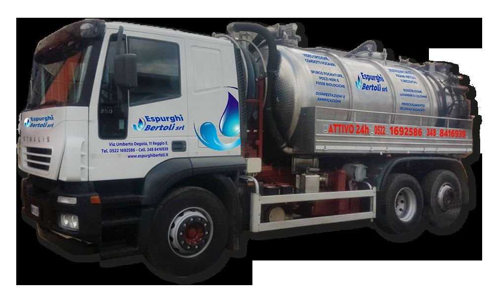
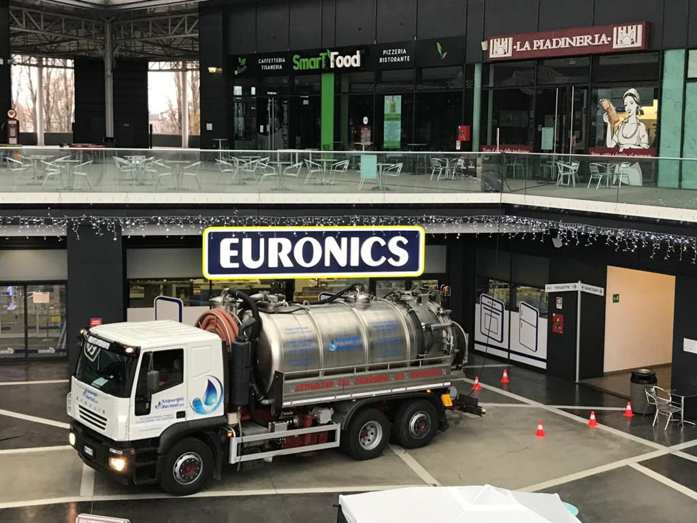
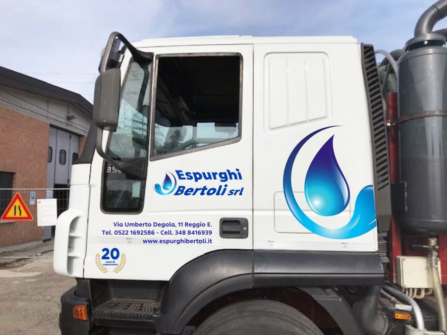

01
Disostruzione e pulizia fognature
Disostruzione di scarichi e tubazioni con attrezzature ad alta pressione.
Anteprima riservata
Il nuovo sito di Espurghi Bertoli
umbra® studio web

Disostruzione e pulizia fognature Reggio Emilia RE
Qualità, esperienza e professionalità
L'azienda
Espurghi Bertoli lavora da Reggio Emilia: disostruzione e pulizia fognature, vuotamento fosse biologiche e imhoff e vuotamento pozzi neri.

Servizi
01 / 07

Disostruzione di scarichi e tubazioni con attrezzature ad alta pressione.

Svuotamento e pulizia di fosse biologiche, Imhoff e degrassatori.
Svuotamento e pulizia di fosse biologiche, Imhoff e degrassatori.
Pulizie e sanificazioni di ambienti e impianti, con prodotti e procedure certificati.
Ricezione, selezione e avvio a recupero dei materiali, perché tornino a essere risorse.
Disinfestazioni e derattizzazioni programmate per enti, aziende e condomini.
Ispezione delle condotte con telecamera: si vede il problema prima di scavare.
Il metodo
Ogni intervento segue lo stesso percorso: tracciabile, documentato, senza passaggi lasciati al caso.
Ci dite dove e cosa: fossa, pozzetto, condotta, urgenza.
Valutiamo accesso, volumi e mezzo adatto.
Aspirazione, lavaggio e, se serve, video-ispezione.
Il refluo va a un impianto autorizzato, con formulario.
Vi restano i documenti di trasporto e smaltimento.
Reggio Emilia · RE
Lavora con noi
Mandateci il vostro curriculum: lo leggiamo tutto, e vi richiamiamo.
Contatti
Enti, aziende e privati: indicateci il servizio e la zona, vi rispondiamo con tempi e preventivo.
Anteprima riservata · preparata per Espurghi Bertoli
Abbiamo usato le foto e le informazioni già pubbliche dell'azienda. L'anteprima è gratuita: se vi piace, acconto del 25% e saldo quando il sito è online, con rimborso completo entro 30 giorni dalla messa online. Hosting, dominio, privacy e cookie li gestiamo noi.
umbra® studio web · umbragency.it